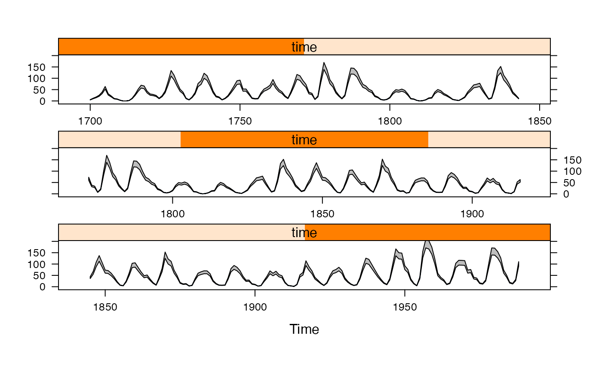

Plot the area between two series as a filled polygon.
panel.ribbon(...)
# S3 method for default
panel.ribbon(
x,
y,
y2,
groups = NULL,
col = if (is.null(groups)) plot.polygon$col else superpose.polygon$col,
border = if (is.null(groups)) plot.polygon$border else superpose.polygon$border,
lty = if (is.null(groups)) plot.polygon$lty else superpose.polygon$lty,
lwd = if (is.null(groups)) plot.polygon$lwd else superpose.polygon$lwd,
alpha = if (is.null(groups)) plot.polygon$alpha else superpose.polygon$alpha,
...,
col.line = border,
fill,
panel.groups = panel.ribbon
)
# S3 method for ts
panel.ribbon(y, y2 = NULL, ...)
# S3 method for zoo
panel.ribbon(y, y2 = NULL, ...)further arguments passed on to panel.polygon.
data vectors, where y and y2 give lower and upper bounds. For
the ts and zoo methods, y,y2 are time series objects;
if y2 is missing then y can be a time series with 2 or more
columns.
a factor defining groups.
graphical parameters taken from
trellis.par.get("plot.polygon") or
trellis.par.get("superpose.polygon") (when groups defined).
col.line overrides border.
ignored; use col instead.
used in panel.superpose.
none yet.
xyplot(sunspot.year, aspect = "xy", cut = 3) +
latticeExtra::layer(panel.ribbon(x, y = y * 0.9, y2 = y * 1.1, ..., col = "grey", under = TRUE))

## missing values are handled by splitting the series
tmp <- window(sunspot.year, start = 1900)
tmp[c(1:2, 50:60)] <- NA
xyplot(tmp, panel = panel.ribbon, y2 = 0)